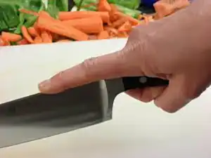
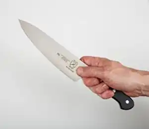
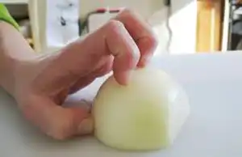
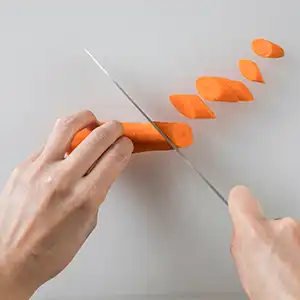
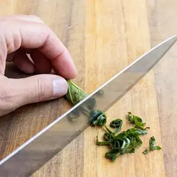
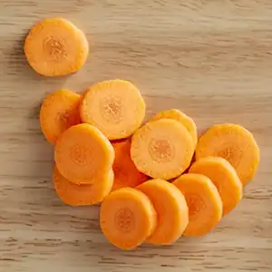
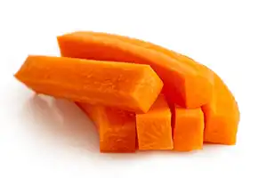
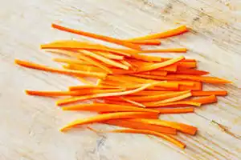
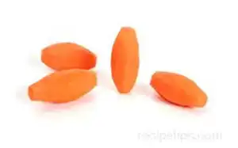

Knife Skills
The Importance of Knife Skills
Knife Skills include both using a knife properly and knowing how to do professional cuts. Being able to use a knife properly will reduce your chance of injury and fatigue from using a knife. Learning professional cuts will not only impress whoever you are cooking for but can also drastically change the textures and how enjoyable it is.

How to Incorrectly Hold A Knife
When using a knife most people will use a grip with their pointer finger on the top of the knife, believing it will give them more strength and control. However this is wrong, this grip with give you less control over the knife and will fatigue your hand quickly.
How to Correctly Hold A Knife

To properly hold your knife, you need to pinch where the blade and handle join between your pointer and thumb, with the handle resting in you palm. This grip maximizes stability because you are holding the blade directly and using the handle for extra force when necessary.

It is also important hoe you hold the food you're cutting.Yous hould hold your hand in a claw-shape, with your knucles out further than your fingertips.
Professional cuts
Cut Names and Descriptions
Left to right.
Oblique/Rolling cut: Beginning with a rounded vegetable, such as a carrot, cut at a 45 degree angle, roll 180 degrees, and cut again.
Chiffonade: Chiffonade is used for leafy herbs like basil or cilantro. Start by stacking the leaves with the largest on bottom. Roll your leaves tightly. Slice the roll using a smooth, rocking motion to avoid crushing the leaves.
Rondelle/Coin: Rondelle cuts start with a rounded vegetable and are simple, even slices between 1/8 and 1/2 inch thick
Batonnet: Begin by squaring of your vegetable, batonnets should be about 2 inches in length. Cut 1/4 inch slices from your vegetable then cut those to 1/4 inch, making a rectangular prism. You can then use these in a dice cut.
Julienne: Julienne also begins with a squared off vegetable approximately 2 inches long. Instead of 1/4 inch measurements, julienne is usually 1/8 inch wide and tall. These can then be used for a brunoise.
Tourné: Tourné is a very uncommonly used cut. Starting with a cylindrical shaped vegetable, hold your knife at one of the ends, pushing the potato into, making a curve. repeat the process about seven times around.





